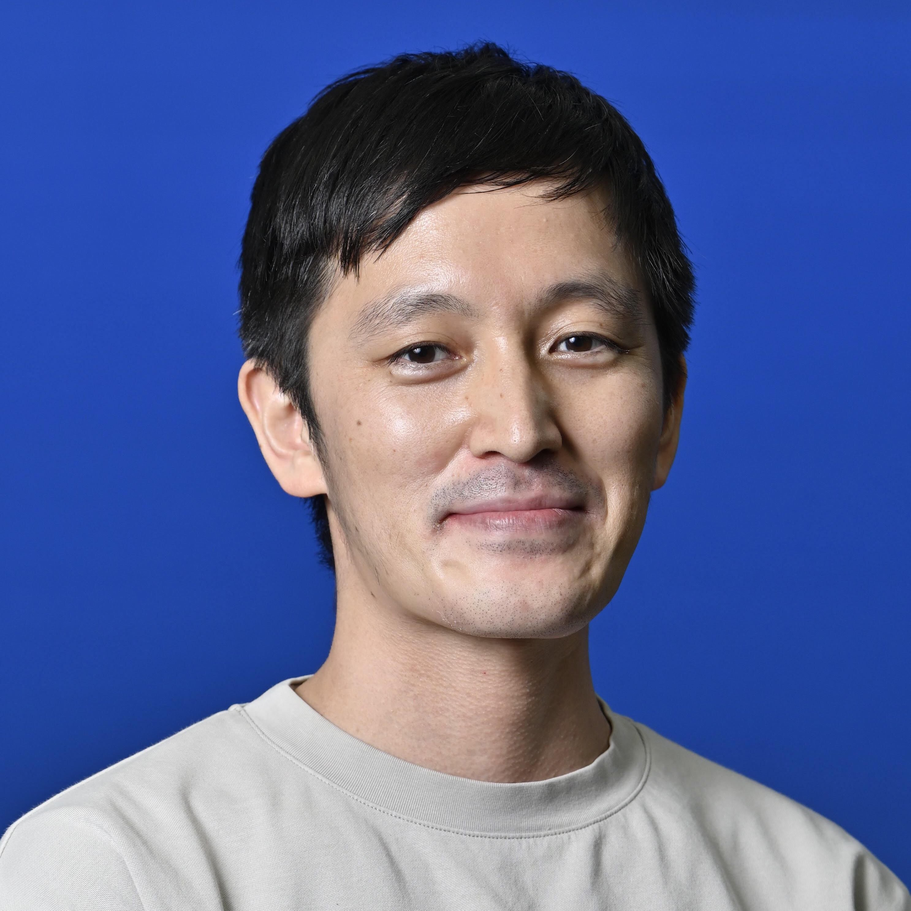
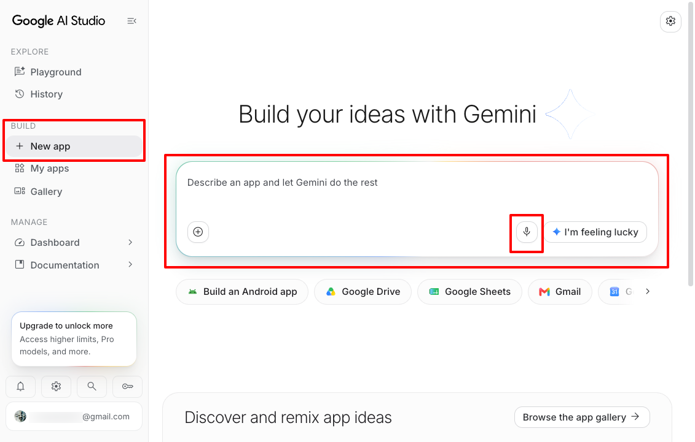
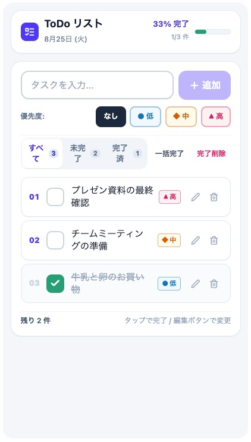
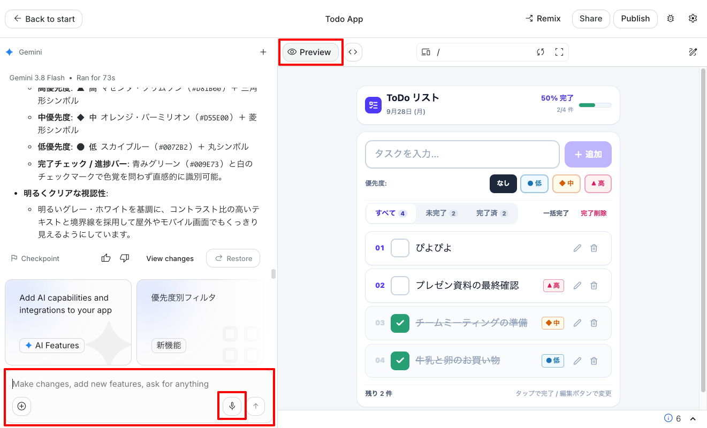

デジクリゼミ 2026 / 第1回 アプリ
AIを活用した
創作。
自分専用のアプリを、チャットでつくろう。
はじめに
はじめての人も、
いっしょにつくろう。
実際にさわって、つくってみる。
90分の入門コースです。
障害のある人も、サポートする人も。
興味があるところから、どうぞ。
なぜAIでアプリをつくる？
自分たちのための道具を、つくろう。
文字でも、声でも。
ことばで伝えて、AIとつくる。
専門知識がなくても挑戦できる。
少数派の「ほしい」も。
多くの人向けのアプリでは、
少数派の機能は後回しになりがち。
全3回の予定
AIと、何をつくろう？
講師紹介

伊藤 尚祐
日本アイ・ビー・エム株式会社 エンジニア
京都芸術大学 非常勤講師／テックルズ エンジニア
通信装置の研究開発、IoTサービス構築を経て、2022年に日本IBMへ。
2024年から京都芸術大学でAIによるアプリ開発を教え、テックルズで福祉の課題に取り組む。
最近ハマっていること → 歴史
テックルズで作ったアプリと、試してもらっている様子
みなさんの自己紹介
チャットに書いて、ひとこと話そう。
お名前
呼んでほしい名前でどうぞ。
ふだんAIをどう使う？
使っているAIと、その使い道。
「はじめて」も歓迎です。
今日の期待
やってみたいこと、
楽しみにしていること。
準備するもの
つくるための道具を、準備。
ネットにつながる端末
パソコン、タブレット、
スマートフォンのいずれか。
Google AI Studio の「Build」
Googleアカウントでログインします。
Buildを開く ↗
Google AI Studioを開いたら
ここから、アプリをつくります。

① New app
新しいアプリをつくる。
② 入力欄
つくりたいものを書く。
③ マイク
声で伝えてもOK。
まずは、生成を始めよう
試しに、ToDoアプリをつくろう。
ToDoアプリ＝やることを書いて、終わったらチェックするアプリ。
Buildを開いて ↗、このお願いを送ってみよう。
ToDoアプリをつくって。
むちゃくちゃかっこよくして。
送信したら、そのままでOK。
AIがつくっている間に、説明を進めます。
今回の体験について
今回は「つくって、ためす」体験。
データの保存には
制限があります
入力した内容は、再読み込みで
消えることがあります。
公開には
設定・条件があります
ほかの人が使えるようにするには、
別の準備が必要です。
今日は長期保存・一般公開を前提にせず、まず動かしてみます。
※ 無料サービス扱いの場合、AI Studioに送った内容はGoogleのAIの学習・改善に使われます。
個人情報や秘密の情報は入力しないでください。データの扱いについて ↗
今日の流れ
90分で、ひとつ動かしてみよう。
大切にしたいこと
自分のペースで。
ためして、変えて、
楽しもう。
今日のゴール
まずはToDo。そのあとは、自由に。
みんなで、まずひとつ
ToDoアプリをサクッとつくって、
動かしてみよう。
次は、自分で選ぼう
ToDoアプリを改良する？
別のアプリに挑戦する？
できあがりを見てみよう
できたToDoアプリを見てみよう。
「今日やること」を追加して、
できたらチェックをつけるアプリ。
あなたの画面は、どうなった？
できた画面のキャプチャを、
会議のチャットに貼ってみよう。
右は参考例です。

つくり方のコツ
伝える → ためす → 変える。
ことばで伝える
まずは「ToDoアプリをつくって」
とお願いしてみよう。
動かしてみる
ボタンを押してみよう。
思ったように動くかな？
ひとつ変える
「文字を大きくして」
「背景を青くして」
動かしてみよう
できたアプリを、動かそう。
- できあがったアプリのプレビューを開く。
- 「牛乳を買う」など、やることを入力する。
- 追加して、完了のチェックをつけてみる。
動かなければ「追加しても増えません」とAIに伝えよう。
できたアプリを修正する
動かして、もうひとこと。

① Preview
右側で動きを確かめる。
② 左下の入力欄
「文字を大きくして」
とお願いする。
③ マイクでもOK
声で修正を伝える。
ひと休み / 5分
ちょっと、ひと休み。
水を飲んだり、体を伸ばしたり。
画面から目を離して、ひと息。
14:10に再開します。
ここからは自由制作 / 35分
ここからは、好きなほうへ。
ToDoをもっとよくする
今のチャットでお願いを続けよう。
色・文字・ボタンを変えたり、
ほしい機能を足したり。
別のアプリに挑戦する
Buildで新しいアプリをつくろう。
自分が好きなことや、
あったらうれしいものから。
ほかのAIと機能や使い方を相談して、
整理した内容をBuildに伝えてもOK。
ToDoアプリをもっとよくする
ToDoを、もっと自分好みに。
見やすく
「文字をもっと大きくして」
「背景をクリーム色にして」
操作しやすく
「ボタンを大きくして」
「ボタンの間を広くして」
好きな雰囲気に
「完了したら花を表示して」
「タイトルを変えて」
ひとつお願いしたら、もう一度動かしてみよう。
別のアプリに挑戦
アイデアは、ふだんの暮らしから。
困っていることは？
毎日の「ちょっと面倒」を
ラクにできないかな。
自分しかほしくない？
それでもOK。
自分のためにつくろう。
ここだけ変えたい？
いつものアプリの
「ここがこうだったら」から。
作品を見せ合おう
あなたのアプリを、
チャットで見せてください。
画面のキャプチャを貼ろう
アプリの画面を撮って、
会議のチャットに貼ってください。
ひとこと、添えてみよう
何をつくりましたか？
どこを工夫しましたか？
画像がむずかしければ、文字だけでもOK。
次回のお知らせ
ありがとうございました！
次回は、モーションアート／アニメ。
次は、魚たちが泳ぐ水族館。
色や動きを、自分好みに。
Google AI Studioを使います。
右の画像は、次回つくる作品のイメージです。